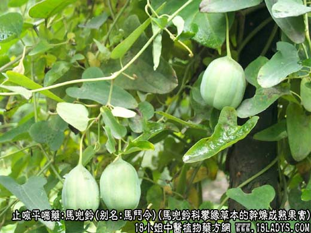
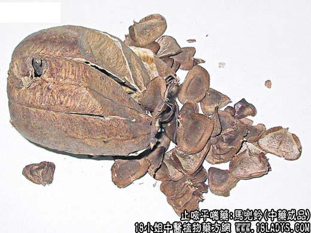
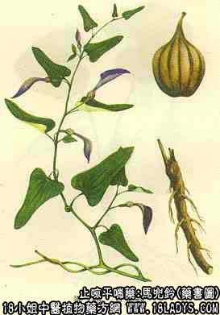

本品为常用中药，始载《开宝本草》
别名：马斗令、斗令。
来源：为马兜铃科多年生攀缘草本植物北马兜铃和马兜铃等的干燥成熟果实。均为野生。
产地：主产于东北、华北、西北、中南地区，其它地亦各有产。
性状鉴别：蒴果卵圆形，长3～7厘米，直径2～4厘米，表面暗绿色或褐色，有纵棱线12条，其中6条微作波状弯曲，为背缝线，其余6条为腹缝线，二者交互排列。基部具细长果柄，果实沿腹缝线作6瓣裂，果柄亦可裂为6条，果皮纸质，较脆易碎，开裂后分为6室，每室含多数平叠整齐的种子。种子扁薄，四边呈翅状，全体略呈钝三角形或梯形。淡褐色，中央颜色较深。气微味以蒴果实整，少破碎者为佳。
主要成分：马兜铃种子含马兜铃酸、马兜铃子酸等。
功效与作用：清热肺、止咳嗽，但祛痰作用不明显。
炮制：生用或蜜制。
性味：苦、寒。
归经：入肺、大肠经。
功能：清热降气，化痰止嗽
主治：肺热咳喘、失音，咳血，痔喘肿痛。
临床应用：治肺热咳嗽、痰喘、声音嘶哑，适用于急性咽喉炎、急性支气管炎。一般配杏仁、苏子、款冬花等。如属肺虚热咳、痰难咯出，或干咳带血则需如配阿胶，方补肺阿胶汤。据报道，马兜铃治高血压病有一定疗效。有助于降压和改善症状。
使用注意：马兜铃的副作用偶见有恶心、呕吐，蜜炙后入药可免此弊。又因其味甚苦，有人喜用瓜蒌皮代之。
用量：3～9g。
处方举例：补肺阿胶汤.
注：1、除以上马兜铃为全国绝大多数地区习用外，过去西南及中南少数地区曾以百合科植物麝香百合，山丹，野百合的果实作马兜铃使用（有的地区已停止使用）。此类植物蒴果略与马兜铃相似，区别点，蒴果呈闪角棱柱形，长5～7厘米，直径2.5～3.5厘米，果皮稍厚具较粗的果柄，果柄不能作线状分裂。果实只三室，种子瓜子形深棕色。
2、云南以云南大百合的种子作马兜铃用；在江浙地区亦曾以山百合的种子作马兜铃使用，习称杜兜铃。
3、四川，绵阳地区以葫芦科土兜铃的果实作马兜铃使用，习称土兜铃。
附1：青木香，为马兜铃的干燥根，呈圆柱形或扁柱形圆，稍弯曲，长5～15厘米，直径0.5～1.5厘米。表皮土黄色或灰黄色，有纵皱纹及须根痕。质坚而稍脆，易折断，断面黄白色或青白色，显射线纹理。气微异香，味苦而麻辣。以条长肥壮，坚实、富粉质、味香者为佳。
炮制：切片，生用。
效用：辛苦寒、行气止痛，消肿解毒、治胸腹胀满、疝气肿痛，虫蛇咬伤，高血压等症。
附2：天仙藤，为兜铃的带叶干燥草质藤茎，茎长1～2米，直径1～3毫米。灰绿色。有纵棱及纵沟，茎有节，节处分支或生叶。叶互生，有细长柄，叶片三角状矩圆形至卵状披针形或卵形，叶脉明显呈网状，全缘，长3～12厘米，宽3～9厘米。全体盘结成团或束成小把。叶多脱落或破碎。质脆，易折断，断面黄白色、有空心。气青臭，味苦。以身干、带叶、条长、绝绿者为佳。
炮制：切咀、生用。
效用：苦温，舒气活血通经、消水肿、发汗，治气血不通、心腹痛、疝气、孕妇水肿、产后腹痛等症。
用量：6～9g。代表方为天仙藤散（《证治准绳》）、处方：天仙藤9g，香附6g，陈皮4.5g，紫苏叶6g，木瓜6g，大腹皮6g，乌药9g，当归身9g，炙甘草3g，水煎服。